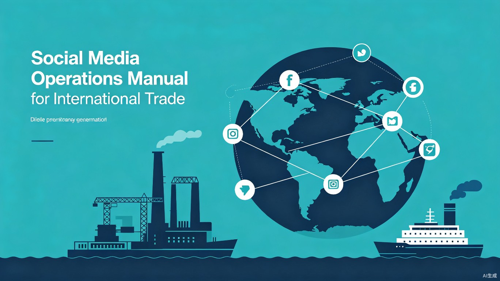

外贸社交媒体操作手册
面向船用与工业柴油发电机组出口业务的社交媒体获客指南。涵盖 LinkedIn、Facebook 两大核心平台，从战略规划到日常执行的完整操作路径。
手册导航
本手册采用分章节结构，请通过左侧导航菜单选择阅读。各章节独立成页，也可按顺序阅读：
第一章 战略框架
明确社交媒体在获客中的定位，梳理目标受众和平台优先级。
第二章 LinkedIn 运营
从账号设置到精准连接、互动策略和每日流程的完整指南。
第三章 Facebook 运营
主页管理、社群参与和互动优先级规则。
第四章 内容创作
行业主题库、内容模板和多语言发布策略。
第五章 风险规避
平台规则、安全操作红线和禁止行为清单。
第六章 数据追踪
核心指标定义和月度复盘方法。
第一章：外贸社交媒体战略框架
1.1 社交媒体在获客中的定位
社交媒体不是"发广告的地方"，而是建立信任、展示专业、获取精准线索的渠道。对于船用和工业柴油发电机组出口业务，买家决策周期长、金额高、技术要求严格，社交媒体的核心价值在于：
- 展示技术实力 — 通过案例、认证、技术文章传递专业形象
- 触达决策者 — LinkedIn 直连船东、船厂采购经理、工程师
- 建立长期关系 — 持续互动培养信任，缩短成交周期
- 获取行业洞察 — 关注行业动态、竞品动向和客户需求变化
社交媒体运营的本质是提供价值而非推销产品。每条内容都应回答一个问题：客户为什么要看这个？
1.2 目标受众画像
根据业务类型区分两类核心受众：
| 维度 | 船用发电机组 | 陆用/工业发电机组 |
|---|---|---|
| 核心角色 | Marine Engineer, Chief Engineer, Marine Superintendent, Shipyard Manager, 船东采购 | Facility Manager, Plant Engineer, Project Manager, 采购总监, 数据中心运维 |
| 关注重点 | CCS认证、船级社认可、 marine grade、油耗、振动噪音 | 功率匹配、并机方案、排放标准（EPA/CARB）、售后服务 |
| 决策周期 | 3-12 个月 | 1-6 个月 |
| 活跃平台 | LinkedIn（主）、专业论坛 | LinkedIn（主）、Facebook（辅）、行业社群 |
1.3 平台选择与优先级
| 平台 | 定位 | 优先级 | 适合内容 |
|---|---|---|---|
| B2B 专业社交，精准触达决策者 | 最高 | 技术案例、认证资质、行业洞察、公司动态 | |
| 品牌形象 + 社群互动 | 中等 | 工厂实拍、交付照片、客户见证、行业新闻 | |
| YouTube | 产品演示与技术讲解 | 低（按需） | 发货视频、工厂参观、安装调试记录 |
1.4 发布节奏
保持稳定、低频但高质量的发布节奏，比高频低质更有价值：
| 频率 | ||
|---|---|---|
| 每周原创内容 | 2-3 篇 | 2-3 篇 |
| 每日互动 | 评论 3-5 条、点赞 5-10 条 | 回复消息 > 评论 > 互动 |
| 连接/添加 | 每天不超过 10 人 | 真实场景下自然添加 |
宁可一周不发文，也不要一天发 5 条凑数。发布频率骤增或骤降都会触发平台风控。
1.2 受众画像详解
船用发电机组 — 核心决策链
- Marine Engineer / Chief Engineer — 日常运维负责人，关注设备可靠性、油耗、维修便利性。他们是技术方案的把关者。
- Marine Superintendent — 管理多艘船只的技术总监，关注批量采购方案、售后服务网络和备件供应能力。
- Shipyard Manager / Procurement — 新造船和修船项目采购，关注价格、交付周期、认证资质和工厂审核能力。
- 船东 / 运营公司 — 最终决策者，关注全生命周期成本（TCO）和品牌信誉。
陆用/工业发电机组 — 核心决策链
- Facility Manager / Plant Engineer — 工厂或设施运维负责人，关注功率匹配、噪音排放和并机稳定性。
- Project Manager — 新建项目采购，关注整体方案（机组+配电+控制）的集成能力。
- 数据中心运维 — 关注 UPS 前级发电、冗余配置和 7x24 运行可靠性。
- 矿山/油田采购 — 关注恶劣环境适应性（高温、高海拔、粉尘）和移动电站方案。
针对不同角色准备差异化内容：给工程师看技术参数和案例分析，给采购看认证资质和交付能力，给管理层看成本效益和行业趋势。
1.3 平台选择详解
LinkedIn — B2B 获客主战场
LinkedIn 是外贸 B2B 最精准的获客平台。通过关键词搜索可以直接找到目标公司的决策者，其优势在于：
- 精准搜索 — 按职位、公司、行业、地区筛选目标客户
- 专业信任 — 商业社交场景下的互动天然具有商业价值
- 内容传播 — 优质技术文章可触达目标客户的二度、三度人脉
Facebook — 品牌形象 + 行业社群
Facebook 更适合品牌展示和社群维护，不作为主要获客渠道：
- 商业主页 — 展示工厂实力、交付案例、公司文化
- 行业社群 — 参与船舶、电力工程相关群组，回答问题、建立口碑
- 私域运营 — 将互动用户引导至 Facebook 主页或 Messenger
YouTube（按需启动）
当条件成熟时，YouTube 是展示产品实力的最佳平台：
- 工厂生产过程、出厂测试视频
- 发货和安装现场实拍
- 技术讲解短视频（3-5 分钟）
优先把 LinkedIn 和 Facebook 做扎实，再考虑 YouTube。平台多了反而分散精力，两个平台做好比四个平台做差强太多。
1.4 发布节奏规划
内容日历模板
每周固定主题发布，降低创作负担、保持一致性：
| 星期 | ||
|---|---|---|
| 周一 | 行业趋势/新闻评论 | （互动日）回复消息和评论 |
| 周三 | 技术文章或案例分享 | 工厂实拍/发货动态 |
| 周五 | 轻松话题/团队动态 | 行业文章分享或客户见证 |
发布时间建议
| 目标时区 | 最佳发布时间 | 对应北京时间 |
|---|---|---|
| 东南亚 / 中东 | 当地 9:00-10:00 | 北京时间 9:00-13:00 |
| 欧洲 | 当地 8:00-9:00 | 北京时间 15:00-17:00 |
| 美洲 | 当地 8:00-9:00 | 北京时间 21:00-23:00 |
每周一集中准备当周素材，批量编辑。利用 LinkedIn 的定时发布功能提前排期，避免每天临时赶稿。
第二章：LinkedIn 运营手册
2.1 账号基础设置
LinkedIn 账号是数字名片，第一印象决定连接通过率。以下设置项逐一检查：
- 头像 — 专业商务照（非自拍、非风景），浅色背景，面部清晰。建议穿正装或商务休闲装。
- 横幅（Banner） — 展示公司产品/工厂/认证，加入核心卖点文字，如 "CCS Certified Marine Generator Sets"。
- Headline — 不要只写职位名称。格式：[职位] | [公司] | [核心卖点]。示例：
Marine Generator Set Specialist | 20+ Years Export | CCS/DNV Certified - 关于（About） — 第一段说明做什么，第二段说明为什么值得信赖，第三段引导联系。总长度控制在 150-200 词。
- 经历 — 补充详细工作经历，特别强调和发电机组/船舶相关的项目经验。
- 技能认证 — 添加行业相关技能：Marine Engineering, Diesel Generators, Power Plant Design, CCS Rules 等。
在 Headline、About、经历中自然嵌入搜索关键词：marine generator, diesel generator set, power generation, ship propulsion auxiliary, industrial generator。客户搜索时会优先看到你。
2.2 精准连接策略
角色优先级
连接请求是稀缺资源（每日限额），必须精准投放。按优先级排序：
| 优先级 | 目标角色 | 搜索关键词 | 日限 |
|---|---|---|---|
| P0 | Marine Engineer / Chief Engineer | "Marine Engineer" + "ship" / "vessel" | 3-4 人 |
| P0 | Marine Superintendent | "Marine Superintendent" + "fleet" | 2-3 人 |
| P1 | Shipyard Manager / Procurement | "Shipyard" + "Procurement" / "Manager" | 1-2 人 |
| P1 | Facility Manager / Plant Engineer | "Facility Manager" + "power" / "generator" | 1-2 人 |
| P2 | Project Manager（电力项目） | "Project Manager" + "power plant" / "backup power" | 0-1 人 |
连接原则
- 每日总量不超过 10 人 — LinkedIn 对频繁连接请求有处罚机制
- 先互动再连接 — 先评论对方内容 2-3 次，再发连接请求，通过率提升 3 倍以上
- 必须附个性化备注 — 绝不使用 LinkedIn 默认模板，备注控制在 50 词以内
- 同一公司不超过 2 人同时连接 — 避免被识别为营销行为
绝不使用自动连接工具（如 LinkedIn Lead Extractor）。一次封号损失的是多年积累的人脉和内容。
2.3 互动策略
互动优先级原则
LinkedIn 的核心是互动优先于连接。每一次互动都在你的专业形象上加分：
- 评论 — 在目标客户的内容下留下专业、有价值的评论。评论比点赞权重大 10 倍，对方更可能回访你的主页。
- 点赞 — 对目标客户和行业 KOL 的内容点赞，维持存在感。
- 转发 + 评 — 转发行业有价值内容并加入自己的见解，展示思考深度。
- 连接请求 — 互动 2-3 次后再发连接请求，对方已有印象。
评论技巧
- 提供补充信息 — "我们最近也遇到类似工况，额外补充一点：..."
- 分享经验 — "在我们的船用项目中，客户也关注过这个参数，最终选择了..."
- 提出问题 — "非常赞同您的观点。想请教一下，您认为 Tier III 的实船应用难点主要在哪？"
- 避免 — 空泛的 "Great post!"、"Very informative!"，这类评论没有任何价值
每天花 20-30 分钟在 LinkedIn 互动，比花 2 小时发 1 条内容效果更好。互动是积累，内容是爆发。
2.4 连接请求话术模板
通用模板
以下话术根据实际场景灵活调整，保持真诚、简洁，不超过 50 词：
| 场景 | 话术（英文） |
|---|---|
| 评论后连接 | Hi [Name], I've been following your posts on marine engineering — really insightful. Would be great to connect and exchange views on generator solutions for vessels. |
| 同一行业 | Hi [Name], noticed we're both in the marine power industry. I specialize in CCS-certified generator sets for export. Let's connect. |
| 目标公司采购 | Hi [Name], saw your company's recent fleet expansion project. We supply certified marine gen-sets with 20+ years export experience. Happy to share specs if useful. |
| 会议/展会后 | Hi [Name], it was great meeting you at [Event]. As discussed, I'd like to share our latest generator catalog. Let's keep in touch. |
| 陆用工业场景 | Hi [Name], came across your profile while researching backup power solutions for industrial facilities. We supply certified generator sets — would love to connect. |
不要在连接请求中推销。不要说 "We have the best price" 或 "Buy from us"。连接请求的目的只有一个：建立关系。成交是后续的事。
2.5 LinkedIn 每日操作流程
每日 20-30 分钟标准流程
| 步骤 | 操作 | 时间 |
|---|---|---|
| 1 | 打开 LinkedIn，浏览 Feed 中目标客户和行业 KOL 的最新动态 | 3 min |
| 2 | 对 5-10 条有价值内容点赞 | 3 min |
| 3 | 对 2-3 条内容留下专业评论（参考话术模板） | 10 min |
| 4 | 搜索 1-2 位目标客户，浏览其主页 | 5 min |
| 5 | 向 1-3 位目标客户发送个性化连接请求（先互动的优先） | 5 min |
| 6 | 回复收到的消息和评论 | 5 min |
每周额外任务
- 周一 — 搜索新目标客户，更新潜在客户列表
- 周三 — 发布 1 篇原创内容（技术文章/案例分析）
- 周五 — 回顾本周互动数据，调整下周重点
2.6 陆用/工业发电机组 LinkedIn 搜索关键词
以下关键词可直接用于 LinkedIn 搜索目标客户。点击「复制」按钮一键复制。
这 5 个关键词聚焦经销商/渠道商，比终端用户更容易建立连接、更快产生订单。经销商持续寻找新品牌和新供应商，一个经销商可覆盖一片区域市场。每天只用 1 个关键词，配合「Locations」切换国家/地区。
柴油发电机专用经销商
发电机组通用经销商
电力设备宽泛经销商
销售与业务开发
补充：终端用户（直接销售场景）
2.7 船用发电机组 LinkedIn 搜索关键词
以下关键词可直接用于 LinkedIn 搜索船用行业目标客户。点击「复制」按钮一键复制。
排名 2、4 是船厂职位，项目金额大、决策链短、回复率高，建议每周至少分配 2 天专门搜索船厂。排名 1、3、5 是船上职位，用于积累行业人脉和获取信息。每天只用 1 个关键词，配合「Locations」切换地区。
按角色搜索
船上工程师
船厂与修船
船东与运营
按船型搜索
按技术需求搜索
按公司类型搜索
第三章：Facebook 运营手册
3.1 主页设置
Facebook 主页是公司对外展示的窗口，设置重点在于专业感和行业属性：
- 头像 — 公司 Logo（高清 PNG，白底或透明底）
- 封面 — 工厂全景或代表性产品图，叠加公司名称和核心卖点
- 简介 — 一句话说明业务：[公司名] — Professional manufacturer of marine & industrial diesel generator sets, CCS certified, 20+ years export experience.
- 联系信息 — 完整填写邮箱、网站、WhatsApp 号码
- 行动按钮 — 设置为 "Send Message" 或 "Visit Website"
内容类型
Facebook 内容以视觉化展示为主，比 LinkedIn 更注重图片和视频：
| 类型 | 示例 | 频率 |
|---|---|---|
| 工厂实拍 | 生产线、出厂测试、仓库备货 | 每周 1-2 次 |
| 交付动态 | 集装箱装柜、发货到港口 | 有交付时发布 |
| 客户见证 | 客户现场安装照片、反馈截图（需授权） | 每月 1-2 次 |
| 行业知识 | 发电机组维护贴士、行业新闻 | 每周 1 次 |
3.2 社群参与策略
目标社群类型
- 船舶行业群组 — Marine Engineers Group, Shipbuilders Association, Maritime Professionals
- 电力工程群组 — Power Generation Forum, Diesel Generator Users, Industrial Equipment Exchange
- 外贸/出口群组 — Exporters Community, China Manufacturing Group
社群互动规则
- 先观察 — 加入新群组后，先花 1-2 周观察群内话题风格和活跃规则
- 回答问题 — 主动回答群内技术问题，展示专业实力。这是最高价值的社群行为
- 分享经验 — 不定期分享行业见解，避免自卖自夸
- 不主动推销 — 绝不在群内直接发产品广告或报价单
每个群组的规则不同。入群后务必阅读群规，违规一次可能被永久移除。发广告之前先问自己：如果有人在我面前发这个，我会反感吗？
3.3 互动优先级
Facebook 每日操作按以下优先级执行，高优先级的必须当天处理：
| 优先级 | 操作 | 说明 |
|---|---|---|
| P0 | 回复私信 | 客户或潜在客户的私信必须当天回复，延迟回复 = 流失 |
| P0 | 回复评论 | 主页帖子下的评论及时回复，鼓励更多互动 |
| P1 | 邀请互动用户关注 | 在帖子下互动的用户，私信邀请关注主页 |
| P1 | 评论行业帖子 | 在行业相关帖子下留下专业评论 |
| P2 | 关注行业主页 | 关注 2-3 个行业相关主页或媒体 |
| P2 | 社群互动 | 在 1-2 个群组中回答问题或参与讨论 |
Facebook 运营追求真实、低频、有上下文的互动。避免批量点赞、批量加好友、无目的私信 — 这些行为只会损害账号权重。
3.4 Facebook 每日操作流程
| 步骤 | 操作 | 时间 |
|---|---|---|
| 1 | 检查并回复所有私信 | 5 min |
| 2 | 回复主页帖子下的新评论 | 3 min |
| 3 | 浏览行业页面和群组的最新动态 | 5 min |
| 4 | 对 2-3 条行业内容点赞或评论 | 5 min |
| 5 | 如有互动活跃用户，私信邀请关注主页 | 2 min |
Facebook 每日投入 15-20 分钟即可。固定在每天同一时间段操作，养成习惯，避免遗漏私信回复。
第四章：内容创作指南
4.1 行业内容主题库
以下主题库覆盖船用和陆用两大业务线，可直接作为内容选题：
| 类别 | 船用主题 | 陆用/工业主题 |
|---|---|---|
| 技术方案 | 船舶辅助发电系统选型要点 / 主发电机组与应急发电机区别 / CCS 规范解读 | 数据中心备用电源方案 / 工厂并机系统设计 / 防爆发电机在危险区域的应用 |
| 案例分析 | 某散货船发电机组改造案例 / 远洋渔船电力系统升级 / FPSO 辅机供货实录 | 某工厂停电后发电机启用记录 / 矿山移动电站现场交付 / 医院应急电源项目 |
| 认证与合规 | CCS / DNV / ABS / LR 认证流程对比 / IMO Tier III 排放标准解读 | EPA / CARB / EU Stage V 排放标准 / ISO 8528 标准解读 |
| 维护知识 | 船舶发电机组日常保养清单 / 海洋环境防腐处理 / 备件管理最佳实践 | 柴油发电机组运行参数监控 / 负荷测试操作指南 / 常见故障排查 |
| 行业动态 | 新能源船舶对传统发电机的影响 / LNG 燃料发电机趋势 | 全球电力短缺对备用电源需求的影响 / 分布式能源与柴油发电机互补 |
优先选择"客户经常问的问题"作为选题。每次客户咨询中重复出现的问题，就是最好的内容方向。记录下这些问题，定期整理成文章。
4.2 内容模板
LinkedIn 技术文章模板
字数控制在 150-300 词，结构清晰：
- 钩子 — 一个常见问题或数据点。如："Did you know that 40% of marine generator failures are caused by improper maintenance?"
- 核心内容 — 2-3 个要点，用编号或分隔线隔开
- 行动建议 — 一个可执行的结论
- 互动引导 — 提一个问题引发讨论
Facebook 视觉内容模板
Facebook 以图片/视频为主，文字精简：
| 类型 | 图片要求 | 文字模板 |
|---|---|---|
| 工厂实拍 | 高清实景，避免过度修图 | Our production line is running at full capacity. [具体项目名] gen-sets ready for shipment to [目的地]. Quality check passed. |
| 交付动态 | 集装箱装柜/港口实拍 | Another successful delivery! [数量] units of [功率] marine generator sets shipped to [国家/地区]. Thank you to our client for the trust. |
| 维护贴士 | 信息图/步骤图 | Quick tip: [一条实用建议]. Save this for reference. |
4.3 多语言策略
语言选择
外贸社交媒体的内容语言直接影响触达范围：
| 语言 | 适用场景 | 平台 |
|---|---|---|
| English（主） | 所有原创内容 | LinkedIn + Facebook |
| 本地语言（辅） | 针对特定市场的内容 | Facebook 为主 |
语言要点
- 使用行业英语 — 不需要追求优美文采，技术术语准确比文采重要
- 避免机翻痕迹 — 如果英语不够熟练，写完后请母语者或 AI 工具润色
- 保持一致性 — 同一产品名称、公司描述在所有内容中使用统一翻译
- 关键词优先 — 确保核心搜索词（generator set, marine power, CCS certified 等）自然融入
LinkedIn 的技术文章只用英文。Facebook 如果针对特定国家市场（如越南、印尼），可以准备本地语言版本，但建议先确保英文内容质量达标。
第五章：风险规避与合规
5.1 平台规则概览
LinkedIn 和 Facebook 都有严格的反垃圾和反营销规则，违反可能导致限流、冻结甚至封号：
| 平台 | 关键限制 | 违规后果 |
|---|---|---|
| 连接请求有上限（未建立关系 < 100/周）；不能批量发送相同消息；不能使用爬虫工具 | 账号限制、功能锁定、永久封号 | |
| 好友请求数量限制；频繁加人触发验证；群组内发广告可被移除 | 临时冻结、功能限制、永久封号 |
5.2 安全操作原则
核心安全原则
- 模拟真人节奏 — 操作间隔随机化，不要固定时间点批量操作
- 内容差异化 — 每条连接请求、每条评论内容不同，绝不复制粘贴
- 渐进式增长 — 新号第一个月每天连接不超过 5 人，第二个月可增至 8 人
- 保持活跃度均衡 — 每天都有一点互动，比一周集中操作一天安全得多
- 绑定手机和邮箱 — 确保账号有双重验证，被盗后可以快速找回
如果收到平台警告或功能被临时限制，立即停止所有操作 48-72 小时。不要尝试"试探底线"，恢复后降低操作频率至少一周。
5.3 禁止行为清单
违反任何一项都可能导致账号受损，严重的可能影响公司品牌在平台上的长期信誉。
绝对禁止
- 使用自动化工具 — LinkedIn Helper、Octopus、Dux-Soup 等批量操作工具
- 购买假粉丝/假连接 — 无论卖家如何保证"真人"，都不值得冒险
- 批量发送相同消息 — 同一条消息群发给多人
- 连接后立刻推销 — 对方刚通过连接请求就发报价单或产品介绍
- 虚假资料 — 使用假身份、假公司信息创建账号
- 频繁更换 IP — 使用 VPN 频繁切换国家 IP 登录
高度谨慎
- 单日连接超过 20 人 — 即使平台没有明确限制，也是高风险行为
- 在群组中发布任何形式的广告 — 即使"很软"也不行
- 跨多个账号操作 — 公司内部多账号管理要格外小心，避免关联风险
第六章：数据追踪与优化
6.1 核心指标定义
不需要追踪几十个指标，聚焦以下核心数据即可：
| 指标 | 定义 | 目标 | 平台 |
|---|---|---|---|
| Profile Views | 主页被浏览次数 | 月均增长 10% | |
| SSI (Social Selling Index) | LinkedIn 社交销售指数 | > 50（满分 100） | |
| Connection 通过率 | 发送请求数 / 通过数 | > 40% | |
| Post Impressions | 内容曝光量 | 月均增长 15% | LinkedIn + Facebook |
| Engagement Rate | 互动数 / 曝光数 | > 3% | LinkedIn + Facebook |
| Inquiries from Social | 社媒渠道带来的询盘数 | 月均 3-5 个 | 全平台 |
数据来源
- LinkedIn — Creator Dashboard / Analytics 页面可查看 Profile Views、Post Impressions、Search Appearances
- Facebook — Meta Business Suite 提供主页数据分析
- 询盘追踪 — 在客户来源表中标注 "Social Media" + 具体平台
6.2 月度复盘模板
每月最后一个周五花 30 分钟做一次复盘，回答以下问题：
定量复盘
| 问题 | 数据来源 |
|---|---|
| 本月 Profile Views 和上月相比变化了多少？ | LinkedIn Analytics |
| 本月发送了多少连接请求？通过率是多少？ | 手动记录表 |
| 本月发布了多少内容？哪条曝光最高？ | LinkedIn / Meta Business Suite |
| 本月收到多少来自社媒的询盘？ | CMS / CRM |
| SSI 分数是否在提升？ | LinkedIn SSI Dashboard |
定性复盘
- 哪类内容获得的互动最多？（技术文章 / 案例分析 / 行业评论）
- 哪些连接请求得到了积极回应？对方有什么共同特征？
- 有没有错过重要的私信或评论？
- 下个月可以调整什么？（增加某个话题的比例、优化发布时间等）
复盘的目的不是"汇报工作"，而是回答一个问题：下个月怎么做得更好？如果某项指标连续两个月没有改善，尝试换一种方法，而不是加大力度重复同样的事。